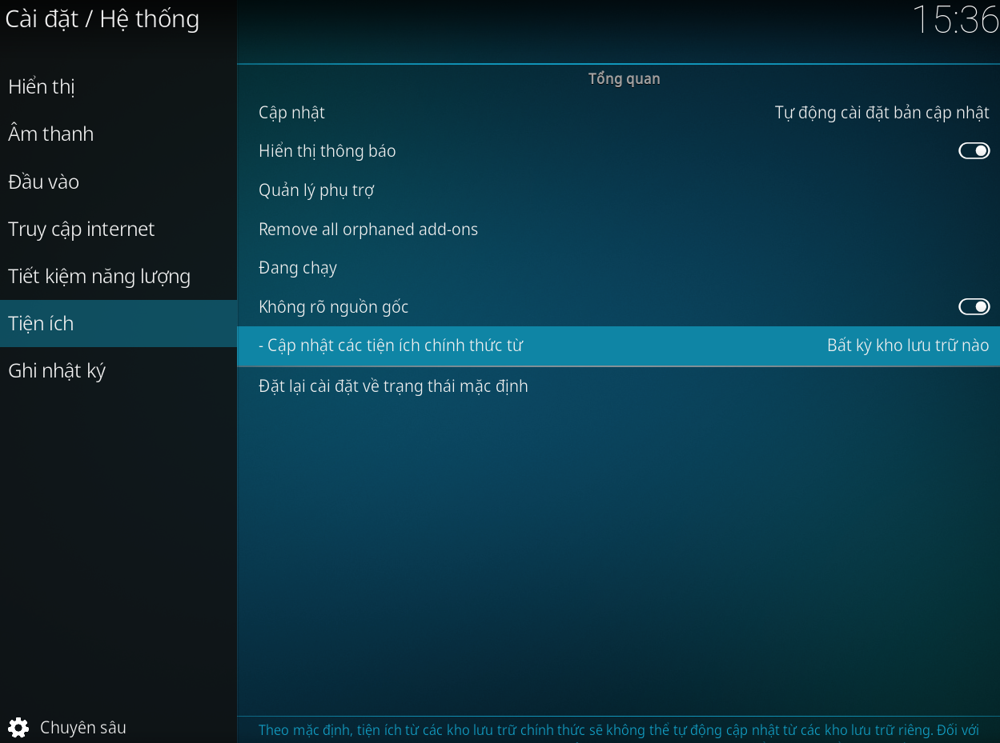

Thêm kho lưu trữ này vào Kodi
Thiết lập tiếng Việt cho Kodi

Trước tiên, bạn cần cho phép Kodi cài đặt cập nhật các tiện ích từ bên thứ 3 (như ảnh bên dưới)

Bây giờ bạn có thể tải xuống tệp zip từ nút ở trên. Hoặc làm theo các hướng dẫn sau để thêm trang này bằng Filemanager.
Hướng dẫn:
- Đi tới trình Quản lý tập tin trong Kodi
- Bấm vào Thêm nguồn
- Trong cửa sổ Thêm nguồn tập tin, nhấp vào <Không> ở bên trái.
- Trong cửa sổ mới, nhập url: https://kodivietnam.github.io
- Nhấp vào OK, bên dưới 'Nhập tên cho nguồn đa phương tiện này', đặt tên tùy ý, ví dụ: kodivn
- Bấm vào OK để đóng cửa sổ. Để kiểm tra xem nó có hoạt động hay không, hãy truy cập nguồn vừa thêm trong Filemanager, bạn sẽ thấy tệp zip
- Bây giờ bạn có thể truy cập Addons và cài đặt từ Zip. Bạn thấy nguồn vừa được thêm vào đó.
Diễn đàn thảo luận
Nhóm Facebook hỗ trợ về KODI.
Facebook: Cộng đồng KODI Việt Nam